Overview
In this homework, I gained an overview on how Bezier Curves and Bezier Surfaces are generated programatically using the mathematical theory. I also gained exposure in how meshes work and implemented some basic mesh operations. Finally, I implemented upsampling for meshes that consisted of working with basic mesh operation. Overall, I gained a thorough understanding of 2D/3D geometries.
Section I: Bezier Curves and Surfaces
Part 1: Bezier Curves with 1D de Casteljau Subdivision
Briefly explain de Casteljau's algorithm and how you implemented it in order to evaluate Bezier curves.De Casteljau's algorithm takes a list of n points and returns a list of n-1 points that is parameterized for some parameter t between two points i and i+1. This is only for one step in De Casteljau's algorithm. The idea here is that the more steps you take in De Casteljau's algorithm, by increasing the number of recursive steps, you obtain points that allow for a more smoother curve between 3 or more 2-D points.
I implemented this by iterating though the given input points for n-1 iterations, where n is the length of the list of points. I then parameterize point i by scaling it by (1-t) and point i+1 by scaling it by (t) and summing the two scaled points. I then add this new point to my result list of points, which I return after completing 1-iteration of de Casteljau's algorithm.
Take a look at the provided .bzc files and create your own Bezier curve with 6 control points of your choosing. Use this Bezier curve for your screenshots below.
Show screenshots of each step / level of the evaluation from the original control points down to the final evaluated point. Press E to step through. Toggle C to show the completed Bezier curve as well.
|
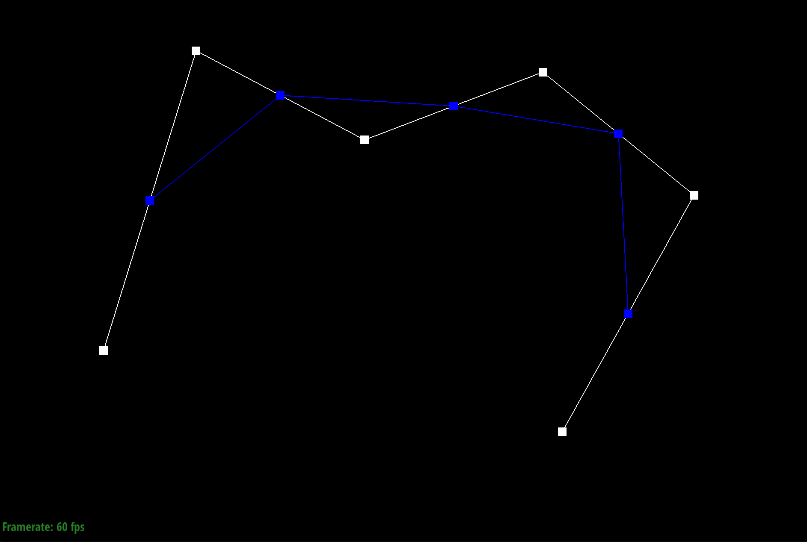
|
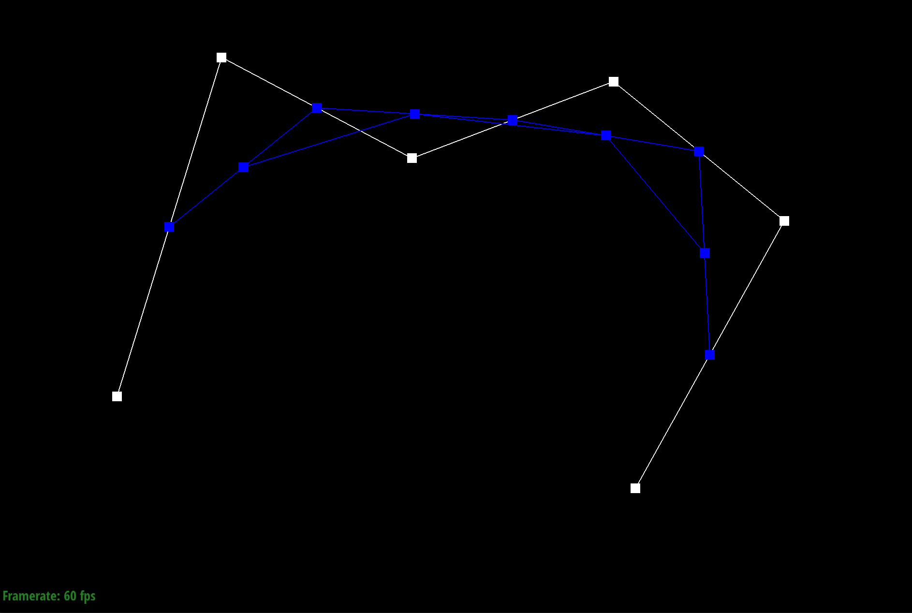
|
|
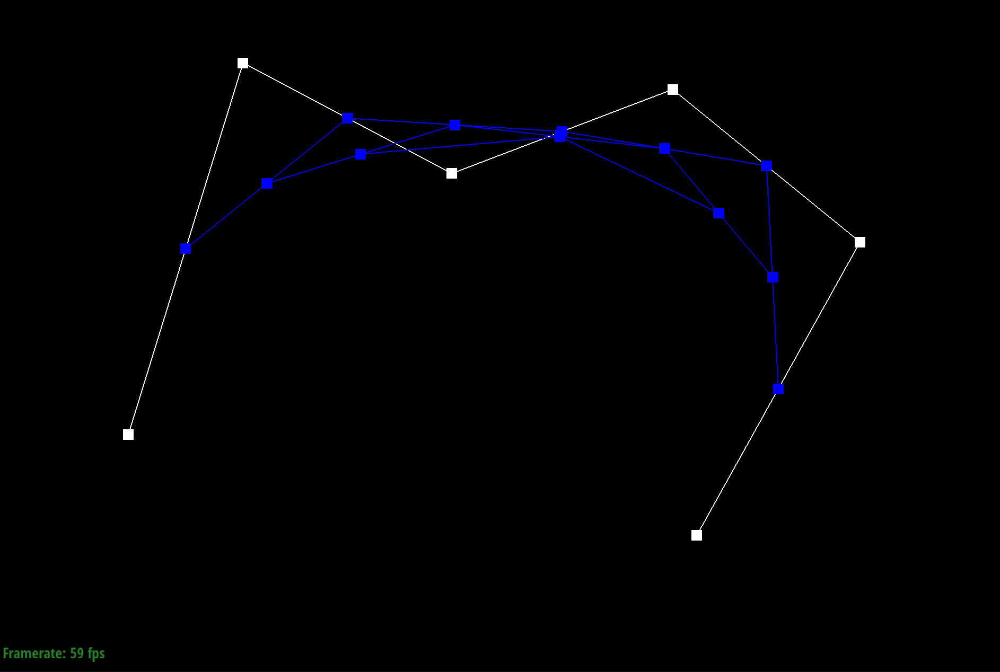
|
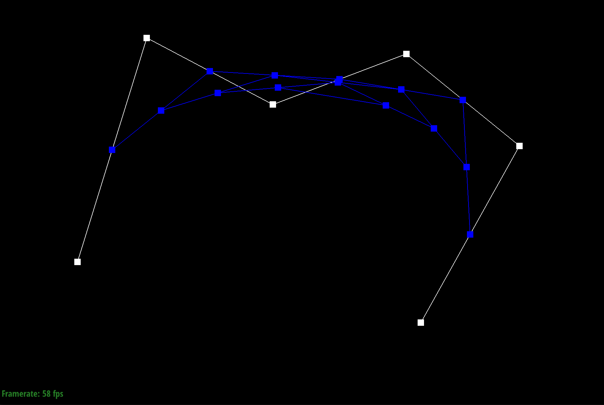
|
|
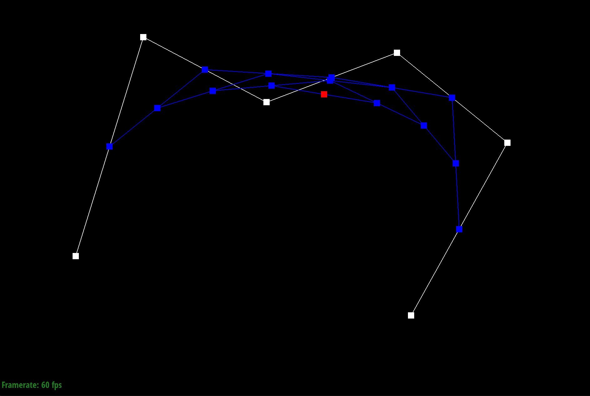
|
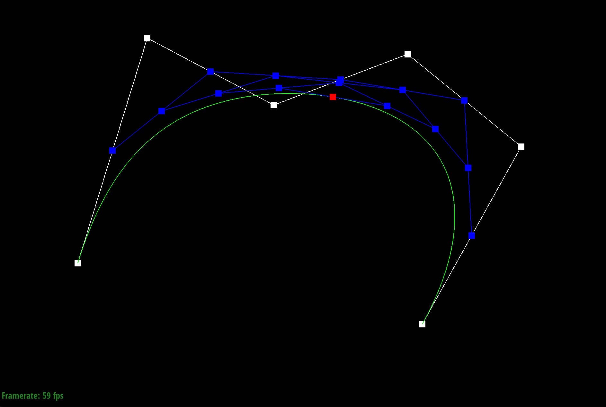
|
Show a screenshot of a slightly different Bezier curve by moving the original control points around and modifying the parameter \(t\) via mouse scrolling.
Part 2: Bezier Surfaces with Separable 1D de Casteljau
Briefly explain how de Casteljau algorithm extends to Bezier surfaces and how you implemented it in order to evaluate Bezier surfaces.To extend de Casteljau's algorithm to Bezier surfaces, we first take the list of 4 control points, and run 1D de Casteljau's algorithm, basically our implementation from Task 1, and keep recursing over the points in a single control point list until the algorithm outputs only 1 point. We do this for a list of 4 control points, so we should have 4 points. With the 4 resulting points, we run 1D de Casteljau's algorithm again, to obtain the final point for the bezier surface.
Show a screenshot of bez/teapot.bez (not .dae) evaluated by your implementation.
Section II: Triangle Meshes and Half-Edge Data Structure
Part 3: Area-Weighted Vertex Normals
Briefly explain how you implemented the area-weighted vertex normals.I utilized the helper code and documentation from the assignment specification to iterate through all the faces around the given vertex. Since we are implementing a method in the vertex class I used the "this" keyword in c++, to access my mesh elements. After obtaining a Half-Edge from the vertex, I then find the face of the vertex, and use the face of the vertex to obtain the normal vector which is a method in the Face class. After obtaining the normal vector, I compute the area, which is (0.5) * (the norm of the normal vector), and I use the area to scale the normal vector. I then take the sum of all faces with area-weighed normal vectors, and then return the normalized sum.
Show screenshots of dae/teapot.dae (not .bez) comparing teapot shading with and without vertex normals. Use Q to toggle default flat shading and Phong shading.
Part 4: Edge Flip
Briefly explain how you implemented the edge flip operation and describe any interesting implementation / debugging tricks you have used.I utilized the resource provided under the primer on HalfedgeMesh Class on the spec. The pdf of the resouce is linked here. I bascially drew up the before and after version of an edge flip, and re-assigned all of my pointers for vertex, edge, and face. I used the setNeighbors() method to automatically set values for HalfEdges. This was a simple and straightforward process.
Show screenshots of the teapot before and after some edge flips.
Write about your eventful debugging journey, if you have experienced one.
A common issue I would get is segmentation fault. I referred to Ed as well as the resource that I've linked above to help with the debugging. Other than that, I experienced no real issues with coding this up.
Part 5: Edge Split
Briefly explain how you implemented the edge split operation and describe any interesting implementation / debugging tricks you have used.This was very similar to Task 4 Edge Flip, except that we now have to add new elements and re-assign pointers. When we add a new vertex, we need to also add 2 faces, 3 edges, and 6 half-edges. I also needed to set the (x, y, z) location of the new vertex to get a clear image. This was a pretty straightforward task to complete.
Show screenshots of a mesh before and after some edge splits.
Show screenshots of a mesh before and after a combination of both edge splits and edge flips.

Write about your eventful debugging journey, if you have experienced one.
When I got a segmentation fault, I double-checked my work and approach to fix it. My edge-split would create a deep dip in the teapot's surface. So I had to rework how I did my normal() method calculations in Task 3, and ensure that I set the proper location for the new vertex.
Part 6: Loop Subdivision for Mesh Upsampling
Briefly explain how you implemented the loop subdivision and describe any interesting implementation / debugging tricks you have used.To implement Loop Subdivision for Mesh Upsampling, I first iterated through all the vertices in the mesh and set their isNew values to false. I then calculate the vertex position for "old-vertices" and store those values in Vertex::newPosition. Then, I iterate through all the edges and calculate the newVertex positions that would result from an edge split and store them in Edge::newPosition. This is also where I set isNew values for edges to false. Then, I iterate through all the edges again, splitting only old-edges. After splitting, the splitEdge function returns the newVertex. Here, I store the newPosition from the Edge to the newVertex. Then, I iterate through all the edges again, and flip edges that are new and connect between and old and new vertex. Lastly, I set all vertex positions to its calculated newPositions. When debugging, I used a lot of print/return statements to debug position issues and segfaults.
Take some notes, as well as some screenshots, of your observations on how meshes behave after loop subdivision. What happens to sharp corners and edges? Can you reduce this effect by pre-splitting some edges?
After each loop subdivision, the sharp corners become more and more smoother, but still retains the "shapness" of their geometry, almost creating a smooth bevel. We can reduce this pre-splitting some edges near and around the face of the sharp corners to help smooth the object and obtain symmetry.
Load dae/cube.dae. Perform several iterations of loop subdivision on the cube. Notice that the cube becomes slightly asymmetric after repeated subdivisions. Can you pre-process the cube with edge flips and splits so that the cube subdivides symmetrically? Document these effects and explain why they occur. Also explain how your pre-processing helps alleviate the effects.
We can reduce this pre-splitting some edges near and around the face of the sharp corners to help smooth the object and obtain symmetry.
|
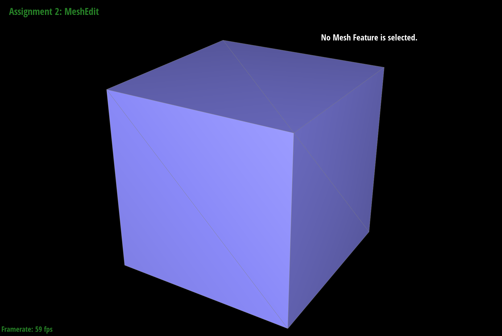
|
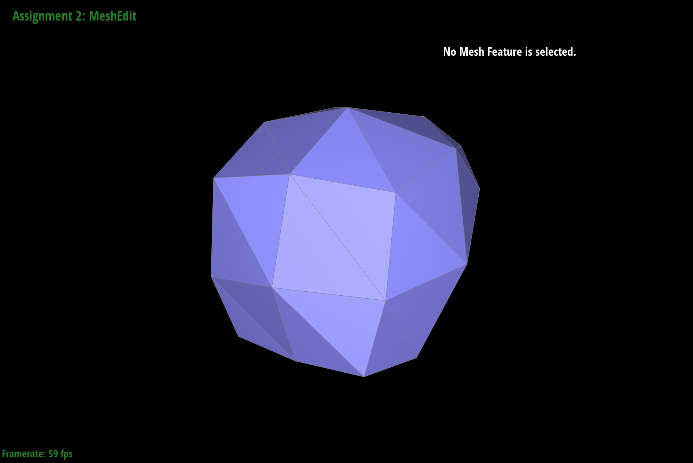
|
|
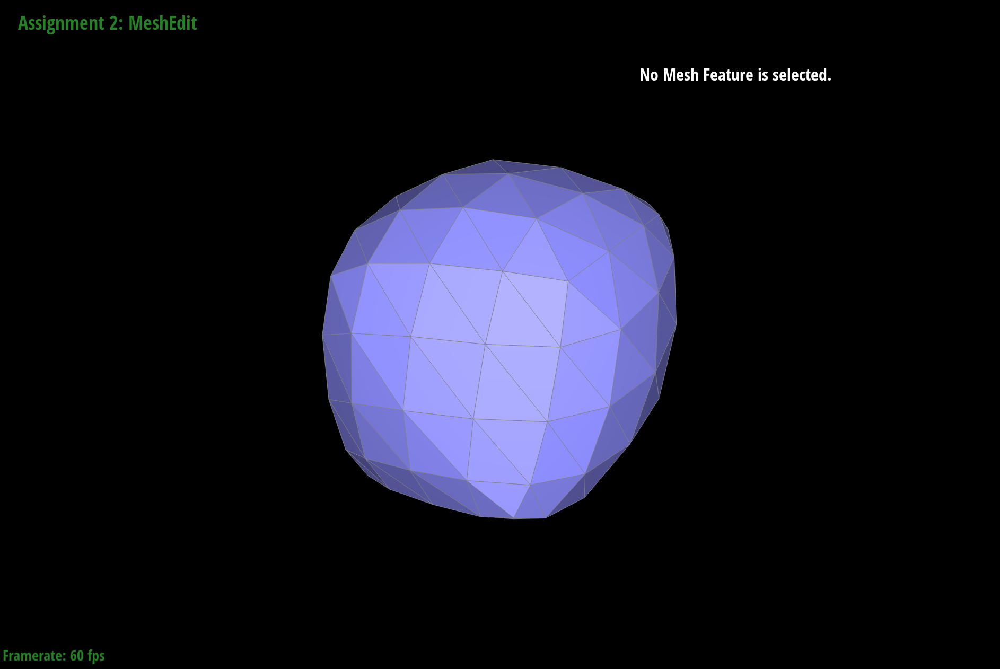
|
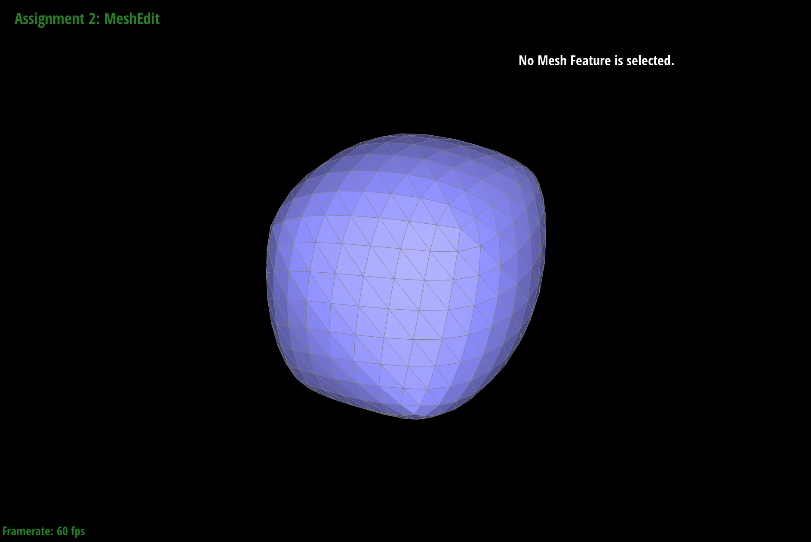
|
|
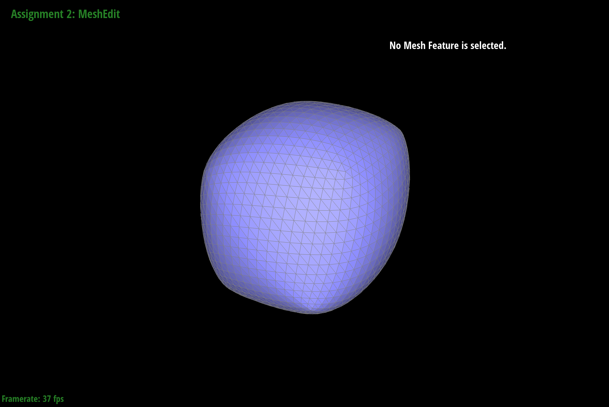
|
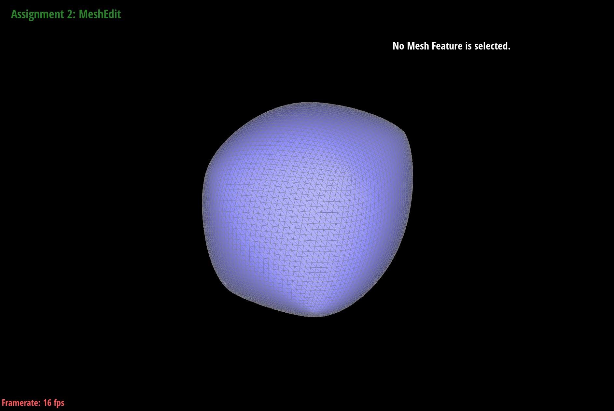
|
|
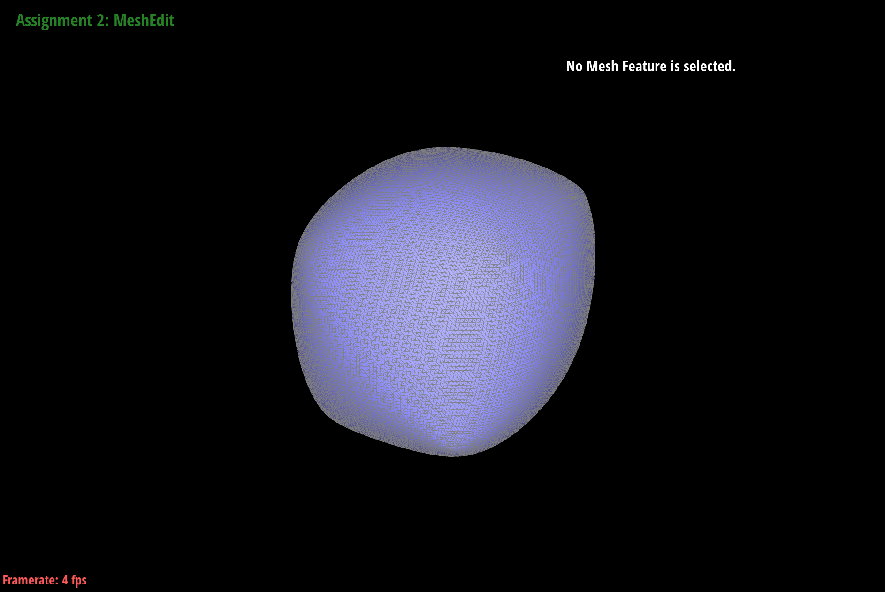
|
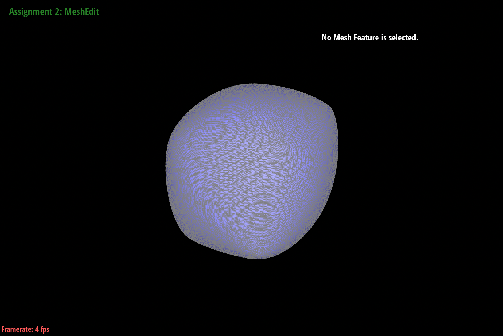
|